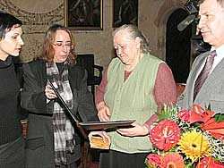
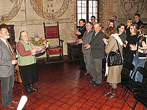

Autor: et, Korso, 2004
IZRAELSKI MEDAL DLA MIESZKANKI D¥BRÓWKI WIS£OCKIEJ Podczas wojny wspólnie z rodzicami Janem i Karolin¹ Kilianami przez kilka miesiêcy z nara¿eniem ¿ycia ukrywa³a ¿ydowskiego ch³opca, a póŸniej pomaga³a mu przetrwaæ w lesie. Dziêki temu ch³opiec prze¿y³ okupacjê. Na uroczystoœæ do Tarnowa Genowefa Æwik przyjecha³a z mê¿em Józefem i burmistrzem Radomyœla Wielkiego Józefem Rybiñskim. Gospodarzem uroczystoœci by³ dyrektor Muzeum Okrêgowego w Tarnowie Adam Bartosz. Radca ambasady izraelskiej zwróci³a siê do wyró¿nionej takimi s³owami –Pragnê Wam podziêkowaæ za to, ¿e w tamtych strasznych czasach, kiedy œwiat wokó³ straci³ wszelkie oznaki tego co ludzkie, pokazaliœcie co znaczy byæ cz³owiekiem. Ja sama nie wiem czy odwa¿y³abym siê post¹piæ tak jak Wy. W imieniu narodu izraelskiego – dziêkujê. Choæ od tamtych wydarzeñ, które rozegra³y siê w Pniu ko³o Radomyœla minê³o ju¿ ponad 60 lat Genowefa Æwik dobrze pamiêta zimn¹ listopadow¹ noc, kiedy ktoœ zapuka³ do okna ich domu -Ja z rodzeñstwem ju¿ spa³am, otworzy³a drzwi moja mama. W drzwiach sta³ ¿ydowski ch³opiec, wygl¹da³ strasznie, wychudzony, brudny, z ranami na twarzy i rêkach, ledwie trzyma³ siê na nogach. Moja mama mia³a dobre serce, wiedzia³a czym grozi wpuszczenie go do œrodka, ale nie mog³a mu odmówiæ pomocy. To by³ przecie¿ cz³owiek. Jego zawszone i zarobaczone rzeczy posz³y do prania, dosta³ ubranie mojego brata, jedzenie, a mama powiedzia³a ,,-idŸ spaæ na piec, jutro pójdziesz dalej”. Na drugi dzieñ uprosi³ moj¹ mamê, ¿eby go jeszcze zostawiæ w domu. Strach by³o, ale co mia³a zrobiæ – ulitowa³a siê nad nim. I tak zosta³ u nas tydzieñ, drugi tydzieñ, miesi¹c, przysz³a zima - to gdzie mia³ iœæ? By³o nas w domu szeœcioro rodzeñstwa, mia³am trzech braci i dwie siostry. By³o strasznie ciê¿ko, ¿eby wszystkich nakarmiæ, a tu jeszcze dosz³a jedna osoba. Ch³opak z¿y³ siê z moimi braæmi, siedzia³ w mieszkaniu, trochê w stodole, czasem w stajni, baliœmy siê ¿eby nie wychodzi³ na zewn¹trz, ¿eby ktoœ go nie wypatrzy³ u nas, bo inaczej Niemcy by nas wszystkich rozstrzelali. Nasze ¿ycie wisia³o na w³osku. Jak przysz³a wiosna coraz czêœciej s³ychaæ by³o o paleniu domów i rozstrzeliwaniach za ukrywanie ¯ydów. Ch³opiec nie móg³ ju¿ d³u¿ej u nas pozostaæ i w maju nas opuœci³. Wiedzieliœmy, ¿e z innymi swoimi ziomkami ukrywa³ siê w ziemiance w lesie. Dwa razy w tygodniu przychodzi³ noc¹ w okolice naszego domu i wynosiliœmy mu jedzenie. Tak przetrwa³ w tej ziemiance trzy lata, a¿ do wyzwolenia. PóŸniej przez Czechy przedosta³ siê do Izraela. Utrzymywa³ kontakt z nasz¹ rodzin¹ od czasu do czasu przysy³a³ listy. W Izraelu za³o¿y³ rodzinê ma piêcioro dzieci. Dwa lata temu, gdy w Radomyœlu obchodzono rocznicê pogromu ¯ydów odwiedzi³ nas z córk¹ i obieca³, ¿e postara siê o to odznaczenie dla mnie. Pani Genowefa to bardzo skromna kobieta. O wydarzeniach sprzed lat opowiada³a chêtnie, ale w ca³ej historii nie widzi nic nadzwyczajnego. �le czuje siê w roli bohaterki i nie bardzo docieraj¹ do niej s³owa ,,przecie¿ Pani rodzina uratowa³a cz³owieka nara¿aj¹c siê na œmieræ”. Ca³a uroczysta oprawa wrêczenia jej wyró¿nienia wprawi³a j¹ w wielkie zak³opotanie. -Po co mi to wszystko, ludzie pomyœl¹, ¿e jakieœ straszne nagrody dosta³am, a to przecie¿ tylko honorowy medal , nawet nie mogê przeczytaæ co na nim pisze...  ,,Sprawiedliwy wœród narodów œwiata”– odznaczenie to przyznaje Instytut Yad Vashem w Jerozolimie, wyró¿niaj¹c osoby, które z nara¿eniem w³asnego ¿ycia ratowa³y ¯ydów w okresie okupacji hitlerowskiej. Do tej pory wrêczono ponad 18 tysiêcy medali. Od lat najliczniejsz¹ grupê wœród sprawiedliwych stanowi¹ Polacy – jest ich blisko 6 tysiêcy. Nazwisko ka¿dej osoby do³¹czaj¹cej do grona sprawiedliwych zostaje wyryte na œcianie Ogrodu Sprawiedliwych Yad Vashem w Jerozolimie. Miros³aw Wnuk © 2006-2004 |